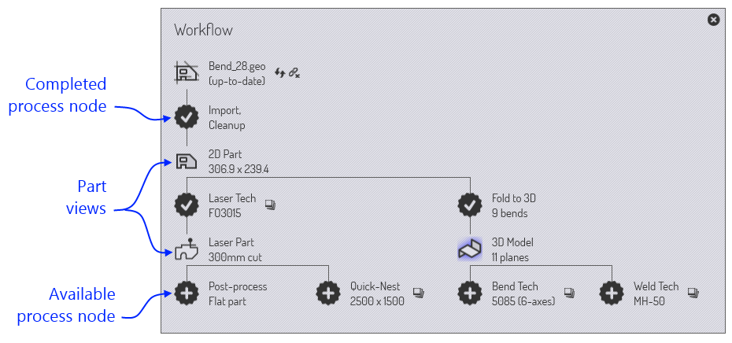
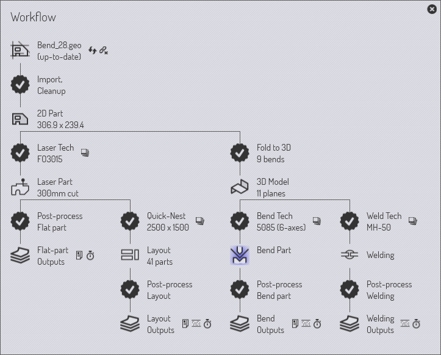
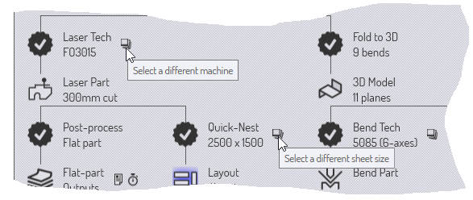
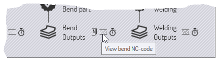

Part workflow
Since TecZone Bend has many integrated modules, there are often multiple paths through which part data can move.
Example 1: when you load flat part data (from a GEO file or DXF file), you could choose to
-
Assign laser tooling to the part, so it can be placed on a sheet and cut, along with other parts.
-
Fold the part along the bend lines into a 3-D part, so it can be processed and a bending sequence computed for a press brake.
Example 2: when you import a 3-D surface model (from an IGES or STEP file), you could choose to
-
Analyze the surfaces and place 5-axis laser CAM tooling along holes that need to be cut.
-
Do feature recognition, convert the surface model to a sheet-metal model, and unfold it to a flat-pattern for punching out with a punch-press.
The Workflow panel

The Workflow panel is like a central hub from where you can direct all these movements. When you have a part open, you can always bring up the workflow panel by just pressing W, or clicking on the workflow icon in the command bar on the left. Let us explore the workflow panel; start by importing a 2D part with bending information (a GEO file, for example). Bringing up the workflow panel at this point shows this:
-
We started with Bend_28.geo, imported and cleaned up to create a 2D sheet-metal part (the part dimensions are displayed)
-
There is then a branch in the workflow.
-
We could assign Laser Tech to the part (this simply means assignment of laser cutting paths to the part contours).
-
We could fold the flat part to 3D (9 bends are detected).
-
Expanding workflow nodes: Stage 1
Click on the Laser Tech icon to assign laser tooling to the part. You will see the part is immediately analyzed and laser tooling is added to it. Then, click on the Fold to 3D icon to fold the flat part into 3D. After these steps, this is how the workflow panel looks:

As the annotations show, there are different types of nodes in the workflow diagram.
-
There are Part View nodes representing the various types of processing one could do on the part. Clicking on these nodes switches the part to that view and the set of operations available on the part is representative of that view. For example, in the Laser Part view, you can see and edit the laser tooling assigned to the part.
-
You can switch between these view by clicking on these icons. All these various part views also have short-cut keys, which you can see if you just point the mouse at one of the view icons. Learn these short-cut keys to quickly navigate through the workflow. So, after a while, you will be using key sequences like W B Esc to open the workflow panel, switch to part to bending view, then close the workflow panel.
-
The part data is pushed between these nodes by various processes, and these processes are represented in the workflow panel using the 13-pointed star icons. For example, you move from the 2D Part view to the Laser Part view by the Laser Tech process (which analyzes the 2D part and assigns laser tooling to it).
Processes you have completed have a check mark displayed inside them. Processes you still have not completed (but which are available) have a cross displayed inside. You can click on these process nodes to complete the process.
Let us summarize what we can see at this stage of our part’s workflow:
-
There are 3 part views available now (the 2D Part, the Laser Part and the 3D Model that we can switch between).
-
There four further processes available:
-
We could Post Process Flat Part (this generates a flat-part report that would be useful to a laser or punch-press operator; it would typically include laser cutting times, tooling setup for punch presses and other special tooling requirements for this part).
-
We could do a Quick-Nest (a quick-nest is a nest that contains only one type of part) and generate a full-sheet packed with this part. This could be used for producing a sheet full of just this part, or as to assist in making a quick cost or time estimate for this part.
-
We could assign Bend Tech (press brake tooling) for the part.
-
We could assign Weld Tech (welding robot tooling) for the part.
-
Expanding workflow nodes: Stage 2
Let us go further: Click on all the available process nodes one at a time, and see how the workflow panel expands. Keep going until you have no more nodes left. Here’s how it should look after these processes :

In this fully expanded state, the workflow panel makes it easy for you to instantly switch between six different views of the part in various processing modules. You can also view and transmit or print all the various outputs generated by these modules. (Outputs could be reports, NC code, or time-studies).
Navigating the work-flow panel
The workflow panel represents a lot of information and operations in a compact, graphical form. Much of the time, this will serve as your central hub as you are working with parts. Let us look a bit more closely at some of the icons in the work-flow panel to understand how they can be used.
Available process nodes
A 13-pointed star with a + inside it represents a processing step that is now available. For example, it could be the folding of a 2-D flat into a 3-D part, or assignment of laser-technology tooling. Hover the mouse over such a node to display a tool-tip that explains what the node will do.

This follows a typical pattern for many Available process nodes. Clicking on the node will execute the process with default settings. A Ctrl+click on the node brings up a settings page first, and after you review/edit the settings, the process is carried out. For example, here is what comes up, when you Ctrl+click on the Quick-Nest node:

The quick-nest settings are displayed so you can edit them before doing the nest.
Completed process nodes
Once a process is completed, the node changes from an available process node to a completed process node; the symbol becomes a star with a check mark inside it. At this point, the options available for that node change.

This is a typical set of options available on a completed process node. Clicking the node brings up the process settings again, so you can tweak them and try the processing again. A Ctrl+click option is also usually available to delete the process data. If you choose this option, you are prompted before the deletion is carried out. For example, here is what happens when you Ctrl+click on the 3D Model node, for a fully processed part:

Auxiliary commands
Many nodes have small icons near them, providing auxiliary commands. These commands provide some functionality that is related to that node. Here are some examples.
-
The auxiliary icons near each technology node typically allow you to select a different machine and tool up for that machine.

-
The icon near the Quick-nest node lets you nest at a different sheet size.
-
Icons near the output nodes let you view the various outputs from a processing node (reports, NC programs or time-studies).

Source file tracking

Most processing in TecZone Bend starts by importing CAD data (either 2-D or 3-D). The TecZone Bend parts that are built from this CAD data can continue to track these source parts. When a part is opened, TecZone Bend can check if the original CAD file from which it was created has been changed in the meanwhile. If it has, the part is now out-of-date and this can be seen in the workflow panel.
-
You can choose to refresh the part by clicking on the refresh part auxiliary icon near the source part node. TecZone Bend will re-import the CAD geometry and rebuild the part.
-
You can also choose to stop tracking the original CAD geometry. This might be useful, for example, if the original CAD file exists on a removable medium or on a remote drive that may not be accessible in the future. To do this, click on the break-link auxiliary icon near the source part node. This will bring up a prompt to stop tracking the source file:

Summary
Here’s a quick summary of the principles in the work-flow panel.
-
The work-flow panel displays nodes representing various part views (such as laser part, bend-part) and nodes representing various processes (like fold-to-3D, assign-laser-tooling).
-
Process nodes that are available (not yet carried out) are represented as 13-pointed stars with sign inside them. Process nodes that are already completed are represented by stars with a mark inside them.
-
Clicking on an available process node invokes that process with default settings. Ctrl+click on an available process nodes brings up an editor to edit the process settings first, and then invokes the process.
-
Clicking on a completed process node lets you tweak the process settings and apply the processing again. Ctrl+click on a completed process node removes the processing data.
-
The small auxiliary icons near a process node, or a part-view node provide control to change some important parameter of that process node (such as the target machine, or the nest sheet size).